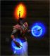

Klaranya
Age : 2 ans de non-vie
Sexe : Femme
Race : Mort-vivant
Faction : Horde
Formation : Mage
Description : Comment cela est ce possible? Pourquoi ai je toujours ce corps mort et sans vie ?
Je pensais qu'avec ce puissant sort, je pourrais renaitre... Mais je me trompais...
En effet une partie de moi est de nouveau vivante, Klarania, cette Trollesse n'est autre qu'une pale copie, celle qui à reussi à regagner la vie.
Je ne suis plus complète, une partie de mon être se trouvant desormais auprès de cette reincarnation.
Je continuerais donc à hanter Kalimdor, telle un spectre, comme mon statut de réprouvée me l'accorde...
Plus d'infos sur Klaranya >>>Lire les 3 récits de Klaranya >>>